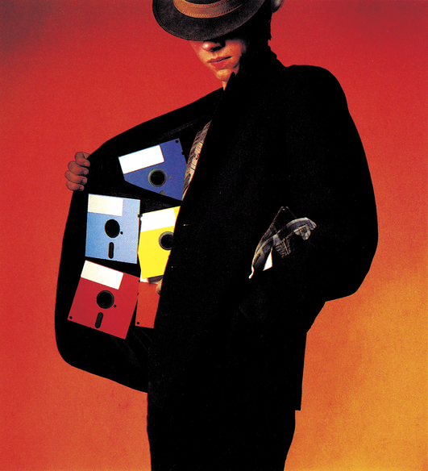

Neues aus dem Sumpf
Ein Jahr ist vergangen, seit dem wir uns das letzte Mal intensiv mit dem Komplex »Raubkopieren« befaßt haben. Was hat sich in diesem Jahr im Sumpf getan? Wie sieht die Szene heutzutage aus?

Der Sumpf trocknet aus — sehr langsam aber beständig. Das ist wohl die wesentlichste Aussage, die sich über die Entwicklung der Raubkopierer-Szene machen läßt. Viele »bekannte« Knacker haben die Szene verlassen, die meisten freiwillig, andere weil sie »geschnappt« worden sind (Darunter befinden sich beispielsweise einige der vielen Knacker-Gruppen, die sich »German Cracking Service« nannten). Viele der noch aktiven Knacker machen sich ein leichtes Leben. Ein Original wird mit Isepic oder Freeze Frame kopierfähig gemacht. Damit keiner merkt, das man nicht richtig geknackt hat, werden die so entstandenen Files gepackt und mit einem Vorspann versehen. Andere »Knacker« mit guten Verbindungen machen es sich noch einfacher: Wenn sie neue »Raubsoft« erhalten, nehmen sie den Vorspann des ersten Knackers weg und setzen ihren eigenen davor. Diese beiden Taktiken sind inzwischen äußerst beliebt. Echte »Handarbeit« wird nur noch von wenigen Knackern geliefert.
Wo sind sie geblieben, die großen Namen wie Section 8, Indy Jones oder Crackman? Die Antwort lautet: Atari ST und Amiga. Den echten Knack-Profis bot der C 64 nichts mehr, sie sind auf neue Computer umgeschwenkt. Das Kuriose daran ist: Auf diesen Computer wird nicht mehr geknackt, sondern ehrenhaft programmiert. So meint ein ehemaliges Section 8-Mitglied, das jetzt professionelle Software für den Atari ST entwickelt: »Wenn heute jemand meine eigenen Programme knacken und weitergeben würde, wär' ich ganz schön sauer«.
Die jetzt noch aktiven Knacker scheinen zumindest nicht mehr mit dem Enthusiasmus zu arbeiten, mit dem früher geknackt wurde. Vor zwei Jahren war es »in«, ein Spiel in einer sauber geknackten Version zu haben und ab und zu auch mal zu spielen. Heute wollen Knacker meist nur noch schnell sein, um Freunden die brandneue Software geben zu können. Gespielt wird da kaum noch. Wie sollte man auch, bei einer Sammlung von über 3000 Programmen, zu der jede Woche 20 neue hinzukommen? Da kann man nur mal einen kurzen Blick auf ein Programm werfen. Teilweise werden die Programme dann auch nicht ordentlich geknackt, da es ja auf Geschwindigkeit und nicht auf Qualität ankommt. Insider bestätigten uns, das immer mehr geknackte Programme bei längerem Spielen abstürzen.
Die Software-Flut hält weiter an
Die Aktivität und der Einfallsreichtum der Knacker ist jedenfalls abgeflaut, vieles läuft jetzt in geregelten Bahnen. Die Software kommt im Original an, wird geknackt und weitergegeben. Besonders bezeichnend für die reine Routine zu der die Knackerei geworden ist: Es kommt immer seltener vor, daß eine Raubkopie eher auf dem »Markt« ist, als das entsprechende Original-Programm.
Vor wenigen Monaten noch rasten Meldungen wie »Winter Games ist da« durch den Sumpf, sechs Wochen, bevor das Programm in Deutschland erschien. Heute sieht es anders aus; die Original-Programme stehen schon länger in den Geschäften, wenn die Kopien herumgehen. Denn die Software-Firmen haben »dichtgemacht«. In Amerika wird bei allen großen Firmen sichergestellt, daß keine »Pre-Production Samples« in den Sumpfdringen können. Dies war noch letztes Jahr häufiger passiert und so gab es Raubkopien von neuen Programmen eher, als das Programm auf den Markt kam. Weiterhin wurde die Belieferung deutscher Händler entscheidend verbessert. Programme großer Firmen, beispielsweise Activision, erscheinen in Europa und Amerika gleichzeitig. Zwar scheint es bei einigen britischen Firmen noch »Lecks« zu geben, aus denen Programmkopien früher in die »Szene« gelangen, doch auch in England wird fieberhaft daran gearbeitet, diese Lecks zu stopfen. Man kann also inzwischen davon ausgehen, daß Knacker im allgemeinen nicht mehr schneller als die deutschen Händler sind, selbst wenn sie Programme direkt aus Amerika oder England beziehen.
Ausnahmen bestätigen dafür die Regel: So gab es im März schon stapelweise Raubkopien von »Heart of Africa«, obwohl das Spiel in Europa nicht erhältlich war. Electronic Arts hatte nämlich auf die amerikanischen Disketten einen Kopierschutz aufgebracht, der verhinderte, daß die Originale in Europa laufen. Damit sollte ein vorzeitiger Import durch deutsche Händler verhindert werden. In Deutschland kam »Heart of Africa« etwa vier Monate später heraus — allerdings in einer speziellen, voll eingedeutschten Version. Die Raubkopierer konnten zumindest die amerikanische Version schon weit vorher spielen, denn nach Entfernen des Kopierschutzes läuft auch die amerikanische Version bei uns einwandfrei.
Wenn den Knackern ihre eigenen Sensationsmeldungen fehlen, dann machen sie sich halt welche, und dabei überholen sie sich oft selbst. So dürfte im letzten Jahr fast jeder Kopierer mal behauptet haben, demnächst auch »Elevator Action« und »Pole Position II« zu haben. Allen, die es angekündigt haben und allen anderen, die das tatsächlich glauben, seien hier kurz mal Fakten genannt: Datasoft hat noch nicht einmal mit dem Programmieren von »Elevator Action« begonnen, da sie gar nicht die Lizenz haben, den Automaten umzusetzen. »Pole Position II« ist zu zirka 50 Prozent fertiggestellt (Stand: Mai 86). Hier ist man mit dem Automatenhersteller noch in Lizenzverhandlungen, das Erscheinen ist also noch gar nicht gesichert. Frühester Erscheinungstermin: Herbst 1986.
Von den Knackern und Kopierern zu den übelsten Einwohnern des Sumpfes: Den Dealern. Mit Dealer bezeichnet man Leute, die Raubkopien gegen Geld verkaufen und sich damit ihr Taschengeld aufbessern oder sogar ihren Lebensunterhalt verdienen.
Geschäfte und Kopien
Wir dachten eigentlich, daß diese parasitäre Spezies inzwischen ausgerottet sei, doch der April des Jahres 1986 bewies das Gegenteil. Es fing ganz harmlos mit einigen Leseranfragen zu unserem Newsroom-Testbericht an, der in einigen Teilen dem mitgelieferten Handbuch widersprechen würde. Stutzig wurden wir dadurch, daß die meisten dieser Anfragen aus Berlin kamen. Des Rätsels Lösung ergab sich kurz darauf aus dem Telefonat eines Lesers, der wissen wollte, wie ein Newsroom-Original denn eigentlich aussähe. Er hatte nämlich vor kurzem ein angebliches Original erworben, das aus zwei Disketten und einer fotokopierten, deutschsprachigen MPS-80l-Anleitung ohne jede Verpackung bestand. Zu zahlen war dafür der »Schleuderpreis« von 50 Mark. Es stellte sich im Nachhinein heraus, daß sich ein Dealer auf dieses doch recht teure Programm (Original um die 150 Mark) gestürzt hatte, um größere Mengen von Kopien mit selbstgeschriebener Kurz-Anleitung an ahnungslose Kunden zu verkaufen. Geht man davon aus, daß ein Dealer maximal 10 Mark Aufwand für die beiden Disketten und die Fotokopien hat, kommt man auf einen Gewinn von 40 Mark — steuerfrei, versteht sich.
Genauere Nachforschungen unsererseits ergaben dann: Dies ist kein Einzelfall. Aktuelle Software, sowohl Spiele wie auch Anwendungsprogramme, werden immer noch schwarz gehandelt. Allerdings legen heutzutage alle Dealer Wert darauf, daß der gutgläubige Kunde nicht sofort erkennt, daß er eine Kopie gekauft hat. Da im Falle einer Entdeckung das Strafmaß äußerst hoch werden kann (Mögliche Anklagepunkte vor Gericht wären: Urheberrecht-Verletzung, Steuerhinterziehung, Betrug, etc.), arbeitet man so geheim wie möglich. Man macht keine Anzeigen mehr in Computer-Zeitschriften, es gibt kaum noch Listen mit Preisangaben, die als Beweismittel dienen würden. Ein heutiger Dealer arbeitett mit Mundpropaganda und einigen wenigen, aktuellen Programmen.
Neben diesen »professionellen« Dealern gibt es leider auch zahlreiche jüngere Leute, die Raubkopien vorzugsweise an Freunde und nahe Bekannte verkaufen. Wenn so jemand gefaßt wird, schiebt er meistens Unwissenheit über die Rechtslage vor. Man hätte halt nicht gewußt, daß der Verkauf von Raubkopien strafbar sei. Abgesehen davon, daß Unwissenheit bekanntlicherweise nicht vor Strafe schützt, kann sich heutzutage wohl niemand mehr damit herausreden. Die Thematik ist innerhalb der letzten zwei Jahre nicht nur von den Computer-Zeitschriften, sondern auch von den anderen Medien (Tagespresse, Fernsehen) derart intensiv behandelt worden, daß mit Sicherheit jeder Computer-Besitzer über die derzeitige Rechtslage im groben informiert sein müßte.
Sollte einer unserer Leser übrigens glauben, daß er einem Dealer aufgesessen ist, sollte er sich an den Produzenten des entprechenden Programms wenden. Meist sind die Software-Firmen kulant und geben gegen Aushändigung der Kopie und der »Bezugsquelle« ein Original-Programm des betreffenden Programms ab. Das hat übrigens nichts mit »Petzen« zu tun: Dealer fügen den Firmen den schlimmsten Schaden zu, weil sie sich auf deren Kosten regelrecht bereichern. Und auch der Käufer der vermeintlichen Originale wird betrogen, da er meistens nur unvollständige Dokumentation und vielleicht sogar mies geknackte Programme, die nicht korrekt funktionieren, erhält.
Wenn einer unserer Leser im Zweifel sein sollte, ob das »günstige Angebot«, das er vor kurzem angenommen hat, auch wirklich ein Original-Programm ist, sollte er sich an eine offizielle Bezugsquelle (Rushware, Ariolasoft, Data Becker oder ähnliche) wenden und nachfragen. Im Zweifelsfall können auch wir in der Redaktion weiterhelfen.
Made in Italy
Ein weiteres Beispiel soll zeigen, wie selbst ahnungslose Händler zu Dealern, zu Händlern von Raubkopien, werden können. Ausgangsort für ganze Berge von Piraten-Software ist Italien. Das italienische Urheberrechtgesetz hat nämlich enorme Lücken. Kurz gesagt ist die Weitergabe von Raubkopien dort nicht gesetzlich verboten. Folgerichtig könnten sogar italienische Händler in ihren Geschäften Kopien verkaufen, wenn sie wollten. Einige skrupellose Geschäftsleute nutzen diese Lücke nun weidlich aus. Da sucht man sich fünf geknackte Programme, packt diese auf eine Kassette, versieht sie wiederum mit einem Kopierschutz, druckt dazu ein vierfarbiges Anleitungsheftchen und fertig ist die Software-Sammlung— Made in Italy. Auf den ersten Blick ist sie von einem englischen Originalprodukt nicht zu unterscheiden.
Ein neues Problem: Der Anleitungsklau
Der Import dieser Sammlungen nach Deutschland ist durch das deutsche Urheberrecht verboten. Trotzdem wurden und werden immer noch einige dieser scheinbaren Originale in Deutschland verkauft. Meistens wissen die Verkäufer gar nicht, auf was sie sich da eingelassen haben, und sind selber ganz verwundert, wenn eine Beschlagnahmung durch die Polizei erfolgt. Deswegen ein wichtiger Tip für alle Italien-Urlauber: Niemals die billigen Sammlungen groß einkaufen, um sie hier mit Gewinn wieder zu verkaufen, sonst könnten Sie mit einer Strafanzeige belangt werden.
Die Kopiererei von Programmen nahm in letzter Zeit zwar leicht ab, doch dafür gab es in einem anderen Bereich mehr »Delikte« denn je zuvor. Gemeint ist das Kopieren und die Weitergabe von Anleitungen zu Programmen.
Der Startschuß für die verstärkte Fotokopiererei wurde wohl durch das Spiel »Elite« gegeben, das ohne seine 64seitige Anleitung keinen rechten Sinn machte. Da sehr viele Leute die Kopie des Programms hatten und, durch Presseberichte und Mundpropaganda angeheizt, Elite auch mal spielen wollten, gab es einen großen Bedarf an Kopien der Anleitung. Zuerst wurde nur unter Freunden, später auch in großem Rahmen und gegen Bezahlung, das Handbuch kopiert. Nachdem die Elite-Anleitung rasenden Absatz fand, weiteten viele ihr neues »Geschäft« aus: Der Manual-Dealer war geboren. Die Rechnung ist einfach: Die Kopie vom Programm hat jeder, aber keiner hat die Anleitung zum Spielen. Inzwischen gibt es schon Leute , die Anleitungen wie Programme horten. Sie werden weder gelesen, noch sonst irgendwie verwertet, sondern nur gesammelt.
Viele Leute scheinen das Kopieren von Anleitungen für »ungefährlich« und legal zu halten, doch auch hier gilt das Urheberrecht. Genauso, wie es illegal ist, eine Programmkopie weiterzugeben, ist es illegal, eine Fotokopie einer Anleitung weiterzugeben. Da hilft auch nicht, daß man eine Änleitung abschreibt oder gekürzt per Textverarbeitung auf einem Drucker ausgibt. Geschützt durch das Urheberrecht ist der Inhalt, der von niemandem wiedergegeben werden darf — auch nicht auszugsweise oder leicht modifiziert. So werden sich die Piraten-Fahnder in nächster Zeit auch verstärkt um Anleitungskopien bemühen müssen.
Manche Leute unternehmen sehr komische Anstrengungen, um an eine Änleitung zu kommen. So gibt es (auch bei uns in der Redaktion) regelmässig Anfragen, ob man jemandem nicht eine deutschsprachige Anleitung für ein Programm zuschicken könnte, weil man die englischsprachige nicht lesen könnte. Das Problem ist bekannt, daß manche Leute mit englischer Dokumentaion nicht zurecht kommen — aber wieso gibt es erstaunliche viele solcher Anfragen zu Programmen, die mit deutscher Anleitung ausgeliefert werden? Es gibt noch andere solcher Fälle, von denen man im Einzelfall nicht sicher sagen kann, ob es sich um Raubkopierer auf der Suche nach der Anleitung handelt. Mit Sicherheit sind aber nicht alle Anfragen von ehrlichen Leuten geschrieben worden, die die Original-Anleitung tatsächlich verlegt oder verliehen haben. Bitte haben Sie Verständnis, daß wir keinerlei Anleitungsmaterial zu Produkten anderer Firmen verschicken können, denn wir wollen uns grundsätzlich nicht strafbar machen. Bei Problemen mit der Dokumentation kann Ihnen nur der Händler oder Produzent weiterhelfen. Am amüsantesten war übrigens die Anfrage eines Lesers, dessen Anleitung von seinem Hund gefressen wurde, und der uns nun um Ersatz bat.
Daß die Raubkopiererei langsam zurück geht, hat sicherlich noch mehr Gründe, als den Abschied einiger Knacker. Ein wesentlicher Faktor ist die konsequente Verfolgung der Raubkopierer durch die Softwarefirmen und die Staatsanwaltschaft.
»Wir stellen im Durchschnitt drei bis fünf Strafanträge am Tag.« Diese Aussage stammt von Jürgen Goeldner, Prokurist der Firma Rushware, die zu den führenden Software-Händlern in Deutschland gehört. Dort geht man davon aus, daß durch die Piraterie ein enormer Umsatzverlust entsteht: »Würde das Kopieren drastisch eingedämmt, könnten wir wahrscheinlich fünfmal mehr Programme verkaufen«. Sollten die Umsatzzahlen in dem Maße steigen, könnte man sicherlich mit starken Preissenkungen beispielsweise im Spiele-Bereich rechnen.
Was unternehmen die Firmen nun genau, um Raubkopierer, Knacker und Dealer zu enttarnen und der Staatsanwaltschaft zu übergeben? Die meisten kleinen Firmen suchen nicht gezielt nach Raubkopierern. So meint Winrich Derlien, Geschäftsführer der deutschen Filiale von Activsion: »Ich treibe keine detektiviische Kleinarbeitt um Software-Piraten aufzuspüren. Wenn mir allerdings einer irgendwie über den Weg läuft, lasse ich ihn vor der Staatsanwaltschaft verfolgen.«
Rushware geht da um einiges härter vor: »Wir durchsuchen beispielsweise den Kleinanzeigenteil der 64'er nach Tausch-Anzeigen. Unsere Mitarbeiter fordern dann privat die Tauschlisten an und überprüfen, ob unsere Programme darin auftauchen. Dies ist praktisch immer der Fall. Wir erstatten dann Anzeige. Auf diese Anzeige hin wird meistens von der Polizei eine Hausdurchsuchung durchgeführt. Die Polizei stellt auf jeden Fall die Software, manchmal auch noch die Hardware sicher. Das beschlagnahmte Material wird von der Polizei ausgewertet, danach erhalten wir dann eine Liste der vorgefundenen Software. Wir stellen daraufhin ohne Ausnahme Strafanzeige. Manche Piraten stellen sich allerdings besonders dreist an und fordern die Anzeige geradzu heraus. Letzte Woche schrieb zum Beispiel einer in unsere Mailbox, daß er die Kopie von »Street Hawk« (ein Programm im Vertrieb von Rushware, Anm. d. Red.) hätte und gerne mit anderen Leuten Software tauschen will. So jemand kann sicher sein, daß schon sehr bald ein Polizeitrupp zur Hausdurchsuchung anrückt.«
Werden da nicht junge Leute kriminalisiert, die vielleicht nur unter Freunden Software tauschen? Jürgen Goeldner fügt ergänzend hinzu: »Wenn wir jemanden erwischen, dann hat der nicht nur mit ein paar Freunden getauscht, sondern mit Tauschlisten gearbeitet und in großem Umfang Software getauscht oder sogar verkauft. Die ganzen kleinen Kopierer kriegen wir kaum, die wollen wir auch gar nicht haben. Wir sind hinter den Kopierern, die Software wie wild durch die Gegend verteilen, und natürlich den Knackern her.«
Wenn einmal ein Strafantrag gestellt wurde, hat der Beschuldigte kaum noch eine Möglichkeit, sich herauszuwinden. Zumindest werden die Kopien beschlagnahmt und vernichtet, in vielen Fällen müssen auch Schadensersatz-Forderungen beglichen werden. Ist der Beklagte noch minderjährig, müssen die Eltern für den Schaden aufkommen. Viel schlimmer trifft denjenigen aber noch die Tatsache, vorbestraftzusein und das nur wegen ein bißchen Kopiererei.
Um es noch einmal klar zu stellen: Die Weitergabe von Software ist kein Kavaliersdelikt. Den Softwarefirmen wird dadurch empfindlicher Schaden zugefügt und damit natürlich auch dem ehrlichen Endverbraucher, der für die Verluste aufkommen muß, indem er höhere Preise für die Programme bezahlt.
Wenn Sie uns schreiben wollen
Letztes Jahr erhielten wir auf unseren Raubkopierer-Artikel einiges an schriftlicher Resonanz, darunter auch von Raubkopierern und Knackern. Wenn uns auch diesmal wieder jemand aus dieser Gruppe schreiben sollte, dann bitte nicht anonym. Briefe, die ohne Namens- und Adressangabe, aber mit blumigen Pseudonymen eintreffen, werden gar nicht bearbeitet, sondern wandern in den Papierkorb. Briefeschreiber können versichert sein, daß deren Namen und Adressen innerhalb der Redaktion bleiben und in keinem Fall weitergegeben werden. Sollten sich interessante Leserbriefe zur Thematik einfinden, werden wir diese in einer der nächsten Ausgaben der 64'er veröffentlichen.
In diesem Zusammenhang sei noch auf die nächste Ausgabe hingewiesen, in der wir unter dem Titel »Der ewige Wettlauf« über die technische Seite des Kopierschutzes und der Kopierprogramme berichten wollen.
(bs)